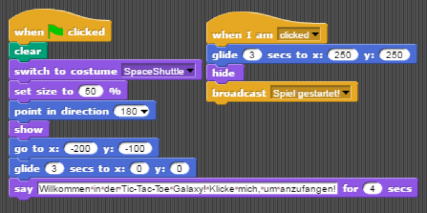

Nachdem wir uns zu Hause einzeln über die unterschiedlichen Programme informiert hatten, besuchten wir gemeinsam die Homepages der für uns interessanten Optionen: „Greenfoot“ und „The Beauty and Joy of Computing“ Wir suchten uns einige Tutorials zu „Greenfoot“ raus und starteten mit der „Wombats Welt“, um uns einen Überblick über die Anwendung zu verschaffen. Allerdings fanden wir keinen richtigen Zugang, hatten kein ausreichendes Grundwissen und waren skeptisch gegenüber der Bildungssoftware. Nach der Stunde waren wir uns noch unschlüssig, welche der beiden Anwendungen wir zum lernen nutzen wollten und nahmen uns ein „Greenfoot“ Buch mit nach Hause, um uns weiter damit auseinanderzusetzen. Schließlich entschieden wir uns für „Beauty and Joy of Computing“, da die bunten Farben der blockbasierten Programmierprache Snap! ansprechend und der Lehrplan (Curriculum) schüler- und studentenfreundlich organisiert war. Außerdem wir die Anwendung genutzt, an Schulen und Universitäten in hauptsächlich den USA. Somit gehören wir, als Schüler, zur Zielgruppe des Tutorials, was unsere Entscheidung zusätzlich beeinflusste. Überzeugt hat uns zudem das Argument des Programmtitels, welcher Schönheit und Freude des Programmierens verspricht.
Willkommen in der Tic-Tac-Toe Galaxy. Bei diesem Projekt handelt es sich, wie dessen Name und Titel bereits andeuten, um ein Tic-Tac-Toe Spiel. Dieses wurde mit der blockbasierten Programmiersprache „Snap!“ erstellt, mit der wir uns im Laufe des Halbjahres intensiv auseinandergesetzt haben. Zur Vorbereitung auf dieses erste eigene Projekt haben wir das Tutorial „The Beauty and Joy of Computing“ (University of California, Berkeley) durchgearbeitet, sind beim Programmieren jedoch hauptsächlich von dessen Vorschlägen abgewichen und unseren eigenen Weg gegangen, um einen maximalen Lerneffekt zu erzielen.
Das Projekt ist in der Cloud von Snap! gespeichert. Solltet ihr das Spiel ausprobieren wollen, folgt dem Link (http://snap.berkeley.edu/snapsource/snap.html) und loggt euch mit unseren Zugangsdaten in die Cloud ein (Benutzername: muritoni Passwort: d5j48n). Wählt im Projektverzeichnis „Tolles Projekt“ und klickt auf die grüne Fahne, um das Spiel zu beginnen. Natürlich könnt ihr euch auch einen Überblick über Sprites und Skripte verschaffen, die wir im folgenden genauer erläutern werden.
Um das Spiel zu starten, muss die grüne Fahne geklickt werden. Auf dem folgenden Bild seht ihr das Programm des ersten Sprites (Sprite5): Auf einem neutralen Hintergrund erscheint der Sprite in Gestalt eines Space-Shuttles. Er bewegt sich in die Mitte des Spielfeldes, wo er den Spieler dazu auffordert, ihn zu klicken, damit das Spiel beginnt.

Übersetzung: Sobald die grüne Fahne geklickt wurde, reagiert der „When Clicked“ –Block und startet das Programm. Diesem folgend befreit der Sprite den Hintergrund von Spielfeld und Markierungen aus vorherigen Runden („Clear“). Dann nimmt er Gestalt und Größe eines Space-Shuttles an, zeigt nach Oben (180) und erscheint („Show“) auf der Bildfläche. Seine Route startet bei den Koordinaten x: -200 und y: -100, anschließend bewegt er sich, innerhalb von drei Sekunden, in die Mitte des Spielfeldes. Dort sagt er vier Sekunden lang: „Willkommen in der Tic-Tac-Toe Galaxy! Klicke mich, um anzufangen!“. Es passiert zunächst nichts, bis der Klick des Spielers das nächste Programmteil auslöst. Nun fliegt die Rakete, innerhalb von drei Sekunden, zu einem Punkt außerhalb der Sichtweite der Spieler (x: 250 y: 250). Mithilfe des „Broadcast“-Blockes vermittelt der Sprite, nach Befolgung der übrigen Anweisungen, die Nachricht „Spiel gestartet!“. Diese Nachricht kann von weiteren Sprites empfangen werden und sie anweisen, ihr Programm zu starten.